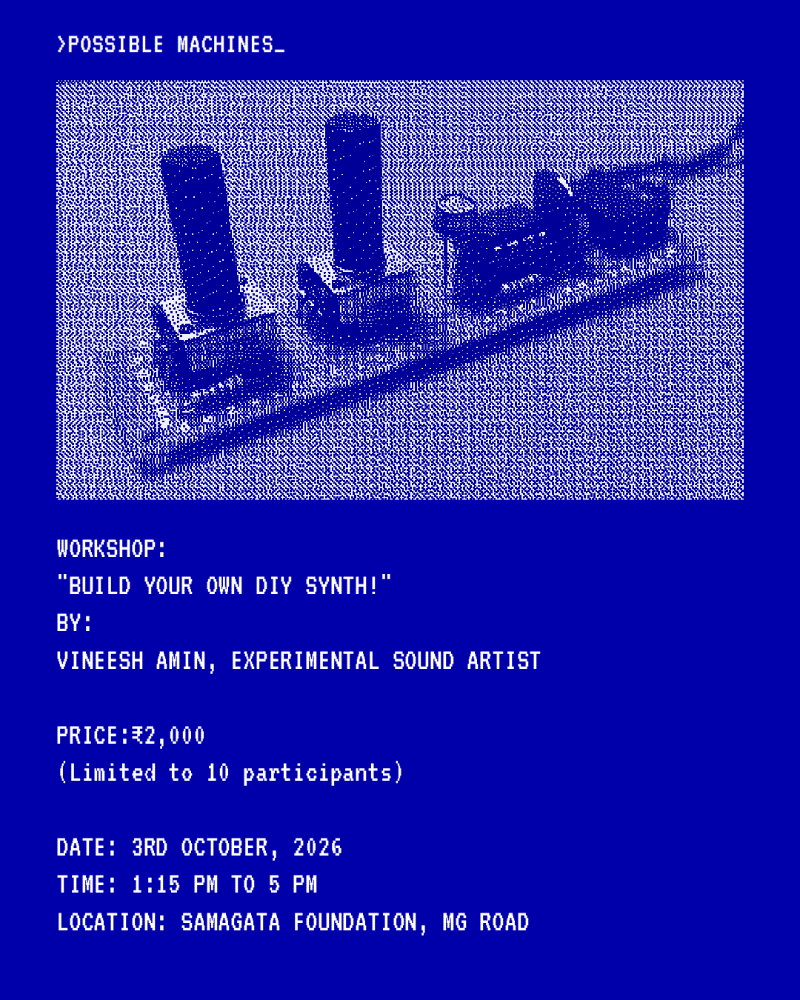
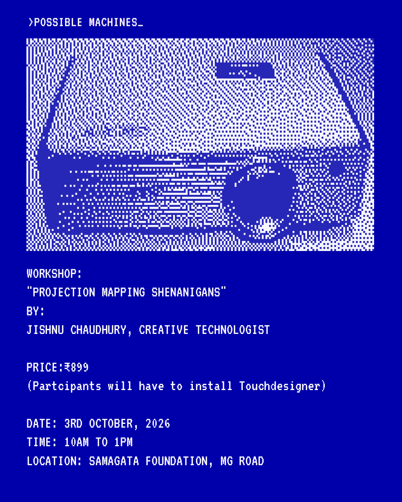

#salon01_workshops

BIO:
Vineesh Amin is an artist working across experimental
sound, new media, and performance. His practice weaves together
custom-built audio-visual instruments, analog and semi-analog
synthesizers, and improvised interactive systems. He also creates
multisensory, responsive installations shaped through participation,
alongside immersive sound experiences that invite audiences to explore
new dimensions of sound and perception.
DESCRIPTION
A hands-on workshop where you’ll build your own small pocket synthesizer from scratch. The synth is a simple, light-sensitive instrument built around an NE555 timer, with two knobs and a light sensor that let you explore pitch, feedback, texture and electronic noise. Together, we’ll assemble the circuit, solder the components, test the instrument, and put it together using custom acrylic panels. No prior electronics or soldering experience is required.
The workshop is designed as a guided, step-by-step process, so you can learn as you build. Each participant receives a complete kit including all electronic components, perfboard, custom-cut acrylic panels, spacers and hardware. All tools and materials are provided.
You’ll leave with a working pocket synth that you’ve built yourself, ready to plug in and experiment with.
₹2,000 per kit — Limited to 10 participants
You don't need to know how to solder. Just come curious and ready to make some noise!

BIO:
Jishnu chaudhury is a creative technologist based in Bangalore, India.
DESCRIPTION:
A Projection Mapping workshop for beginners in Touchdesigner by Derivative,
covering the basics of the program, getting gigs as well as using llm's.